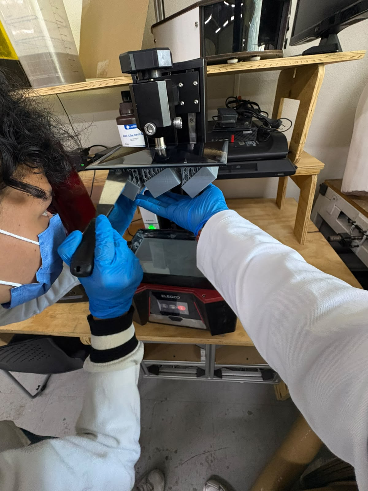
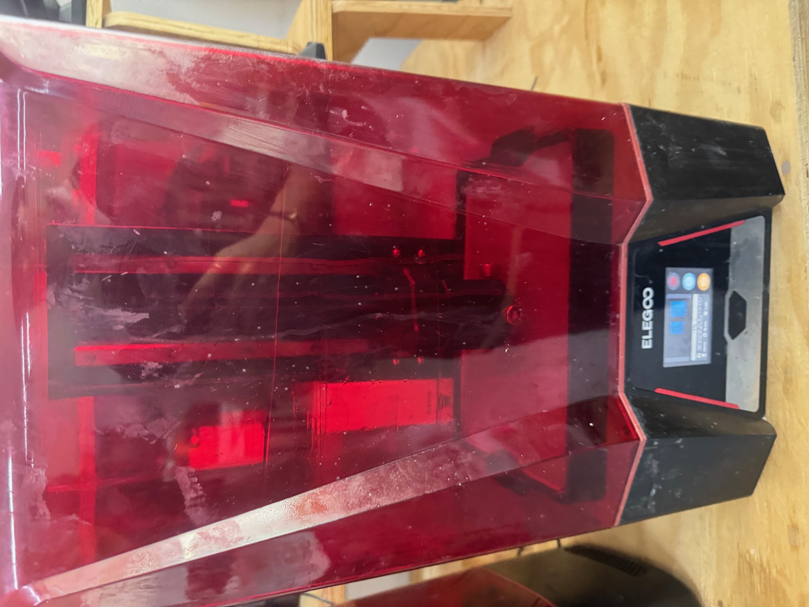
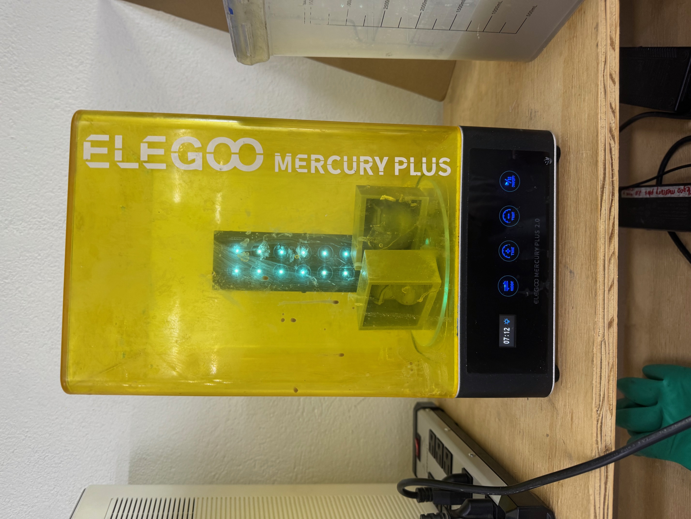
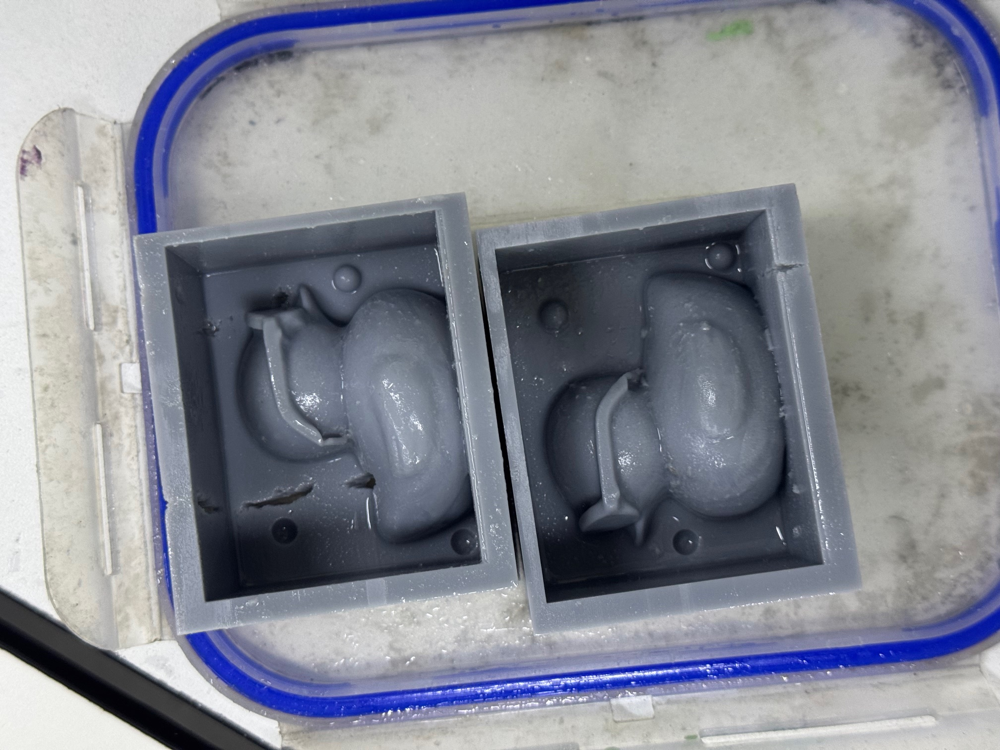
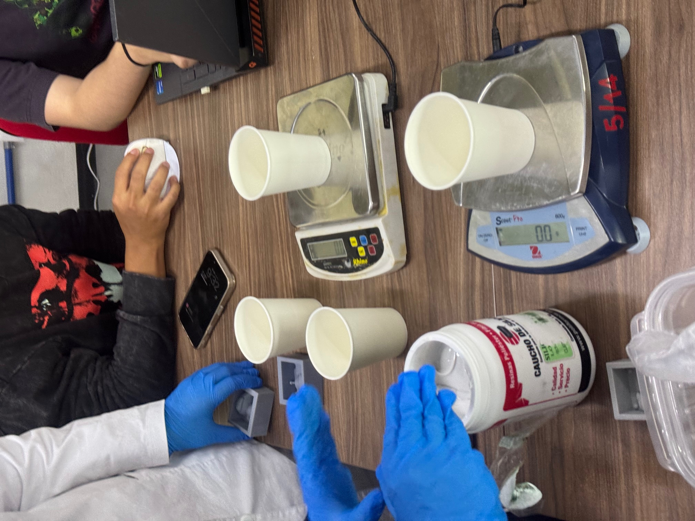
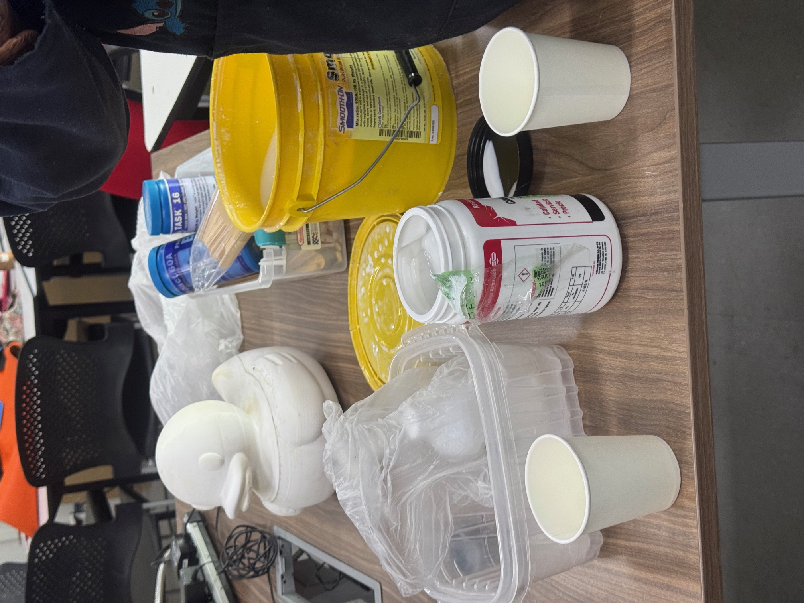

Reporte de Práctica: Moldeo y Vaciado (Molding and Casting)
Institución: Universidad Iberoamericana Puebla
Profesor: Oliver
Fecha: 30 de octubre del 2026
Semana: Week 12
1. Fundamentos Teóricos
Moldeo (Molding)
El moldeo consiste en verter un material líquido o maleable dentro de una cavidad (molde) donde se enfría o cura para tomar su forma. Es ampliamente utilizado en la producción masiva de componentes plásticos, metálicos y cerámicos.
Vaciado (Casting)
El vaciado hace referencia al vertido de materiales líquidos (metales fundidos, resinas, cauchos) en moldes preparados (de arena, silicona, metal o cerámica). Puede ser permanente o desechable y se aplica en la creación de piezas complejas, escultura, joyería y prototipos industriales.
2. Fichas Técnicas de Materiales y Fichas de Seguridad (MSDS)
A. Silicona P48 (Caucho de Silicona Flexible)
- Descripción: Silicona flexible empleada para la elaboración de moldes elásticos de alta fidelidad.
- Fórmula de Mezcla Utilizada:
- 70% Caucho de silicona P48.
- 28% Solución/diluyente para rebajar viscosidad.
- 2% Catalizador.
- Cantidad Total: \(\approx 250\text{ g}\).
B. Silicona Smooth-On Silicone 3030
- Vida útil (Pot Life): 45 minutos.
- Curado: Temperatura ambiente (overnight) o post-curado térmico.
- Proporción estándar: 100A : 10B.
C. Resina Anycubic High-Speed UV
- Temperatura de operación: 18 – 35 °C (Precalentamiento máximo: 60 °C).
- Resolución Z: 25 a 200 micras.
D. Cera para Maquinado (Ferris Carving Wax Block - 1L)
- Bloque de cera dura ideal para maquinado de precisión sin necesidad de desmoldante, totalmente reutilizable al fundirse.
3. Comparativa de Procesos: CNC vs. Impresión 3D SLA
| Criterio | Maquinado CNC (Cera Ferris) | Impresión 3D Resina (SLA) |
|---|---|---|
| Reproducción de Detalle | Sí (según diámetro de herramienta) | Alta precisión (Resolución Z: 25 - 200 \(\mu\)m) |
| Reglas de Diseño | Ángulos positivos para maquinado en 3 ejes. | Geometrías complejas, huecos y muros estructurados. |
| Ventajas (Pros) | - Área de trabajo amplia (ej. \(1.22 \times 2.44\text{ m}\)). - Cera reutilizable (ecológico). - No requiere agente desmoldante. |
- Recrea ángulos negativos (si la pieza es flexible). - Proceso automatizado y simple para formas orgánicas. |
| Desventajas (Contras) | - Limitación con ángulos negativos. - Requiere cambio de herramientas (desbaste/acabado). |
- Volumen de construcción limitado. - Material más frágil y costoso. |
| Agente Desmoldante | No requiere | No requiere |
| Tiempo Relativo | 1:54 h | 1:43 h |
4. Equipamiento Utilizado
Impresión y Curado SLA
- Impresora 3D SLA: Elegoo (Resina UV).
- Estación de Lavado y Curado: Elegoo Mercury Plus 2.0.
- Software Slicer: Chitubox.
Maquinado CNC (Referencia FabLab)
- Máquina: Asia Robótica Shop-1325.
- Potencia del motor: 4 HP a 24,000 RPM.
- Alimentación: 220V / 2F / 3.5 kW.
- Software CAM: VCarve 3D (Estrategias de Desbaste y Acabado).
5. Metodología Experimental (Paso a Paso)
Paso 1: Diseño del Contramolde
- Modelado 3D del contramolde utilizando SolidWorks.
- Exportación del modelo en formato
.STL.
Paso 2: Fabricación del Contramolde en Resina SLA
- Preparación del archivo
.STLen el software Chitubox (posicionamiento y generación de soportes). - Impresión en 3D en la impresora Elegoo SLA.
- Extracción cuidadosa de la plataforma de impresión usando una espátula.
- Lavado con alcohol isopropílico (IPA) en la máquina Elegoo Mercury Plus.
- Curado UV en la Elegoo Mercury Plus durante 20 minutos.

Figura 1: Impresora 3D Elegoo SLA durante la preparación de la impresión.

Figura 2: Extracción cuidadosa del contramolde impreso con espátula.

Figura 3: Proceso de post-curado UV durante 20 minutos en la Elegoo Mercury Plus.

Figura 4: Contramolde impreso en resina SLA listo para la aplicación del silicona.
Paso 3: Mezcla y Vaciado del Molde de Silicona P48
- Preparación del área de trabajo y uso de báscula de precisión.
- Formulación de la mezcla (\(\approx 250\text{ g}\) totales):
- \(70\%\) Caucho de silicona P48.
- \(28\%\) Solución para rebajar la viscosidad.
- \(2\%\) Catalizador.
- Mezclado homogéneo evitando la incorporación excesiva de aire.
- Vertido lento y controlado en el contramolde impreso para evitar atrapamiento de burbujas.
- Tiempo de curado hasta solidificación del molde de silicona flexible.

Figura 5: Dosificación y pesado con báscula para la mezcla de silicona P48.

Figura 6: Insumos de silicona P48 y recipientes para mezcla.
Paso 4: Vaciado de la Pieza Final
- Preparación de la resina para la figura final.
- Vertido de la resina dentro del molde flexible de silicona P48.
- Desmoldeo tras completar el tiempo de solidificación.
6. Conclusiones
- Eficiencia de la Impresión SLA para Contramoldes: La utilización de la impresora 3D de resina SLA y el slicer Chitubox permitió obtener un contramolde rígido con excelente acabado superficial y alta precisión geométrica. La etapa de curado de 20 minutos en la Elegoo Mercury Plus garantizó la estabilidad química de la pieza antes de recibir la silicona.
- Comportamiento del Caucho P48: La adición del \(28\%\) de diluyente redujo la viscosidad de la silicona P48, facilitando el llenado de las cavidades del contramolde y reduciendo significativamente la presencia de burbujas sin perder elasticidad durante el desmoldeo de la figura final en resina.